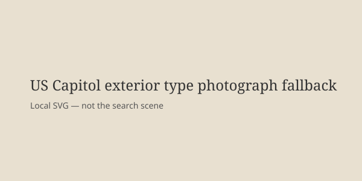

Washington · investigation · 12 October 2026
Homeland Security Investigations executed a judicially authorized search warrant at Rep. Ilhan Omar’s Washington-area home.

What is agreed across desks
On the morning of 12 October 2026, agents of Homeland Security Investigations, the investigative arm of the Department of Homeland Security, executed a search warrant at the Washington, D.C.-area home of Representative Ilhan Omar, Democrat of Minnesota. The Justice Department confirmed that the warrant was judicially authorized and secured by the Department of Justice as part of an ongoing federal criminal investigation. Sources familiar with the matter told multiple outlets that the probe concerns immigration paperwork completed when Omar was a child, submitted by her late father. Omar, who arrived in the United States as a 12-year-old refugee from Somalia in 1995, has not been charged. She issued a statement calling the search the latest escalation in a campaign of political intimidation and said she would not be silenced. The search occurred approximately three weeks before the 3 November midterm elections, a window in which the Justice Department has historically exercised caution on actions involving candidates.
Neighbors and video posted online showed agents outside the residence in the early morning hours. Boxes were removed. Trump administration officials have previously referred to an investigation involving Omar’s family’s immigration documents. Trump himself, when asked, called Omar “a terrible person” but said he was not involved in the search.
What is only a quote
Omar’s characterization of the search as “political intimidation” is her statement. It is not a finding of the court that issued the warrant. Claims by administration officials that the paperwork contained fraud remain allegations under investigation; they are not established facts in any public charging document. Democratic leaders’ description of the action as an “abuse of power” is a political judgment.
Mechanism a reader needs
A federal search warrant requires a showing of probable cause to a magistrate or judge that evidence of a crime will be found at the place to be searched. Execution by HSI indicates the investigation falls within immigration-related criminal statutes (false statements, fraud in immigration documents, conspiracy). Because Omar is a sitting member of Congress and a candidate, the 60-day pre-election period is relevant as a matter of long-standing DOJ practice, not as a legal prohibition. Practice can be overridden when career officials and the Attorney General approve. No public document has yet described the precise affidavits or the full scope of the investigation, which some reporting says has expanded beyond childhood paperwork to finances and foreign contacts.
Immigration fraud investigations involving naturalized citizens can examine the original application, the sponsor’s statements, and later representations. Childhood applications filled out by a parent are common in refugee cases; the legal question is whether material falsehoods were made knowingly. Until a charging decision or a public filing appears, the existence of the warrant is the checkable fact. The political context—Omar is a frequent target of presidential rhetoric and Minnesota’s Somali community has been a focus of administration statements—is observable. It does not by itself prove or disprove the underlying allegations.
Readers outside the United States should note that members of Congress are not immune from criminal process. Search warrants on lawmakers are rare but not unprecedented. The absence of charges at the time of the search is normal; investigations often take months after a warrant.
What this story is not
It is not a determination that Omar committed a crime. It is not a photograph of her home or of agents removing boxes. The image above is a type photograph of the Capitol building.

Source articles and scores
Image: Wikimedia Commons type photograph of the US Capitol via Special:FilePath. Caption states it is not the searched residence. onerror falls back to committed SVG. No crossorigin attribute.